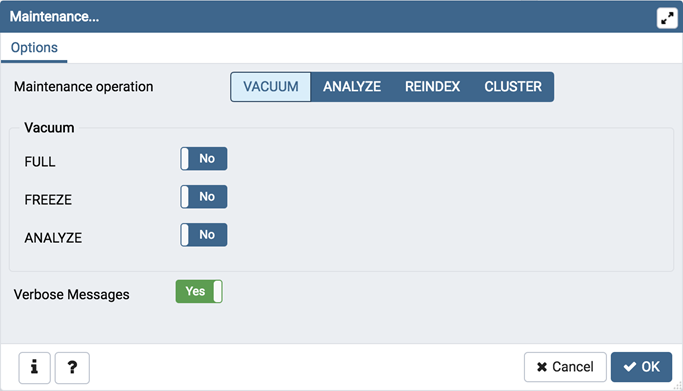
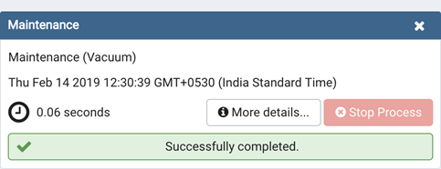
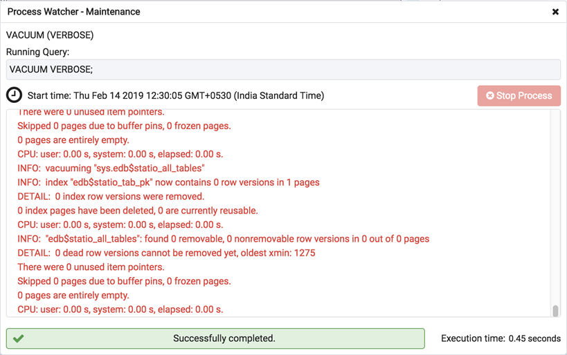

Maintenance Dialog¶
Use the Maintenance dialog to VACUUM, ANALYZE, REINDEX or CLUSTER a database or selected database objects.
While this utility is useful for ad-hoc maintenance purposes, you are encouraged to perform automatic VACUUM jobs on a regular schedule.
Select a button next to Maintenance operation to specify the type of maintenance:
Click VACUUM to scan the selected database or table to reclaim storage used by dead tuples.
Move the FULL switch to the Yes position to compact tables by writing a completely new version of the table file without dead space. The default is No.
Move the FREEZE switch to the Yes position to freeze data in a table when it will have no further updates. The default is No.
Move the ANALYZE switch to the Yes position to issue ANALYZE commands whenever the content of a table has changed sufficiently. The default is No.
Click ANALYZE to update the stored statistics used by the query planner. This enables the query optimizer to select the fastest query plan for optimal performance.
Click REINDEX to rebuild any index in case it has degenerated due to the insertion of unusual data patterns. This happens, for example, if you insert rows with increasing index values, and delete low index values.
Click CLUSTER to instruct PostgreSQL to cluster the selected table.
To exclude status messages from the process output, move the Verbose Messages switch to the No position; by default, status messages are included.
When you’ve completed the dialog, click OK to start the background process; to exit the dialog without performing maintenance operations, click Cancel.
pgAdmin will inform you when the background process completes:
Use the Stop Process button to stop the Maintenance process.
Use the Click here for details link on the notification to open the Process Watcher and review detailed information about the execution of the command that performed the import or export:
